Desarrollo de base de datos para un gran supermercado
Bases de Datos. El modelo de datos relacional y el lenguaje SQL
Juan Antono Cobo Zamora
Ignacio Baca Moreno-Torres
Jesús S. Barriga Antonio
Diciembre 2011
Planteamiento inicial
Por: Juan Antonio Cobo Zamora
Desarrollo sencillo y colaborativo
Para esto hemos usado exhaustivamente tres herramientas
- SQL Developer, tanto para SQL como para el modelo relacional
- DIA para los modelos E/R
- Mail (gmail) para comunicación y debates
El debate ha sido parte importante del trabajo, el acumulado
de los correos han dado como resultado un documento de más
de 50 páginas (sin repeticiones) a partir de más de 80 correos
El cliente lleva la razón...
Pero lo que hay tras bastidores es parte fundamental en
el diseño de bases de datos. Por tanto se ha dado mucha importancia
al diseño y a las diferentes opciones posible, siguiendo los principios
- El modelo debe lo más adaptable posible
- El modelo debe ser lo más sencillo posible
- Debe de debatirse cada opción y ver los pros y los contras
- Se ha considerado, en la medida de lo posible, usar algunas herramientas
especificas de Oracle como campos compuestos, trabajos o funciones internas
Contenido de la presentación
El contenido de la presentación se ha dividido en cuatro apartados
- Modelo E/R - describe las decisiones tomadas a
partir de los requisitos
- Modelo Relacional - destaca las transformaciones
realizadas desde E/R
- Modelo Físico - muestra las partes destacadas de
la implementación en Oracle
- Minería de datos - describes aquellas vistas o
métodos que extraen información del modelo generado
Modelo Entidad Relación, visión abstracta del problema
Por: Juan Antonio Cobo Zamora
Relaciones y Entidades principales
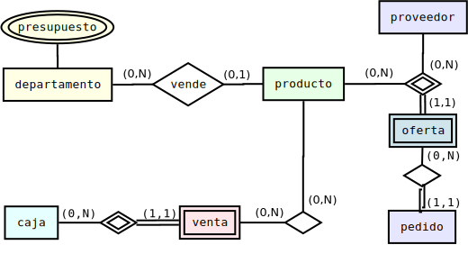
Destacar la cardinalidad mínima 0 generalizada, especialmente la
de producto hacia departamento
E/R Decisión I - Ofertas ¿entidad o relación?
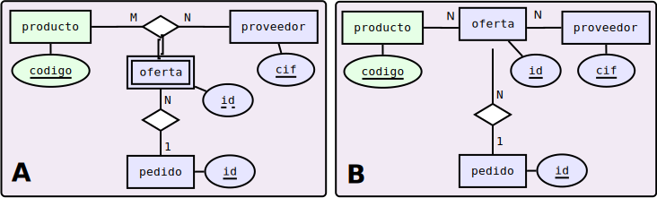
- oferta relaciona un producto con un proveedor
- pero puede haber varias ofertas para el mismo proveedor producto
- la conclusión fue que A representaba mejor la relación oferta pero
B nos muestra una aproximación al modelo relacional usado
E/R Decisión II - Caja ¿atributo o entidad?
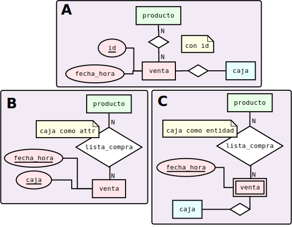
E/R Entidad Departamentos
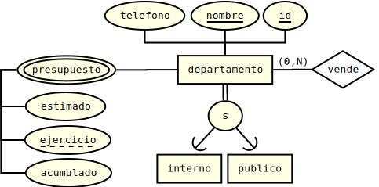
- presupuesto es un multivaluado para cada ejercicio
- tanto nombre como id son claves únicas
- un departamento puede ser de tipo interno, publico o ambos
E/R Entidades Producto y Proveedor
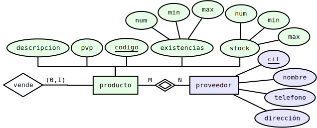
- producto contiene al almacén, representado por stock
- producto y proveedor se relacionan a través de oferta
- un producto puede no pertenecer a ningún departamento
E/R Entidades Venta y Caja
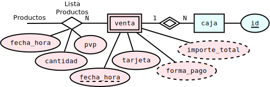
- venta es débil respecto a caja
- importe total y forma de pago son derivados
- fecha hora es clave parcial junto a caja
- la relación lista productos hace de histórico de precios
E/R Entidades Oferta y Pedido
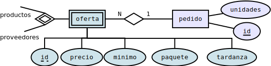
- pedido queda identificado por el subrogado id
- oferta es una entidad débil respecto a productos y proveedores
- oferta tiene una clave parcial id ya que puede haber más de una oferta
para cada pareja producto proveedor
E/R Diagrama resultado
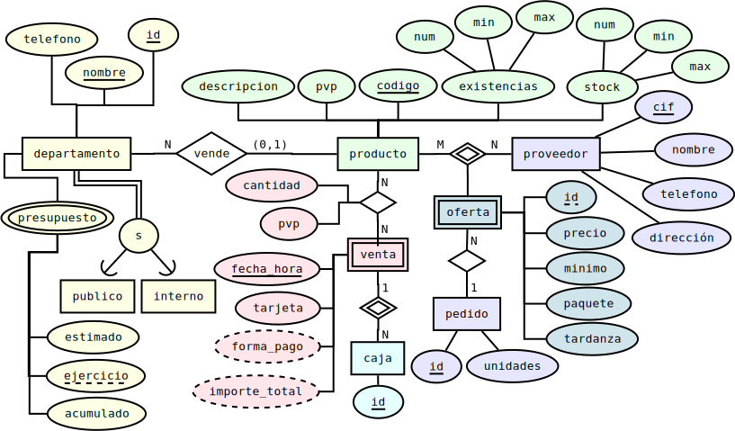
Modelo Relacional, entrando en profundidad
Por: Ignacio Baca Moreno-Torres
Decisión sobre claves y relaciones
El modelo ER las relaciones involucraban claves compuestas, pero
se ha considerado usar claves subrogadas por varios motivos
-
Permite mas versatilidad, e. g. proveedor tiene como clave el CIF, pero
este podría no saberse por parte del usuario
-
Es más consistente e. g. venta se identifica por las claves parciales
caja y fecha, pero fecha es un valor dependiente de la implementación, si fecha
tiene precisión de día solo se podría almacenar una venta al día
-
Es más sencillo e. g. pedidos se relaciona con ofertas, si no se usase
cave foránea deberían heredarse las tres claves parciales
Decisión sobre tipo de departamento
Dada la falta de utilidad que se extrae del enunciado, se ha optado
por almacenar el tipo en un único campo como una colección de valores.
Esta solución permite definir un departamento de uno o varios tipos, además de
poder añadir nuevos tipos de departamentos.
Más adelante se detalla como se ha llevado a cabo este campo colección.
Implicaciones del proceso compra en entidad venta
El proceso de compra establece que no se pueden realizar simultáneamente dos o
mas compras a través de la misma caja.
Se ha solucionado a través de una restricción y del nuevo campo añadido en el
modelo relacional ventas.activa
Además se ha creado una vista ventas activas que facilita
el proceso de compra de productos
Aunque el cliente pide de forma clara que no se puedan realizar
compras simultaneas en la misma caja, se ha realizado el modelo
considerado que esta restricción pueda ser retractada por el cliente
Traducción de la entidad caja al modelo relacional
Dado que caja no contiene ningún atributo más que su identificador se ha
optado por no crear una tabla en el modelo relacional
Para ser consistentes con el modelo E/R se ha optado por crear una vista
que represente todas las cajas que se han identificado en alguna venta
La vista por tanto representa el conjunto de identificadores de cajas
sin ningún otro atributo
Traducción del atributo departamentos.presupuesto al modelo relacional
El atributo presupuesto esta formado por información del presupuesto
del departamento para cada ejercicio
La traducción ha consistido en transformarlo en una tabla con clave principal
formada por el departamento y el ejercicio
Diagrama relacional resultado
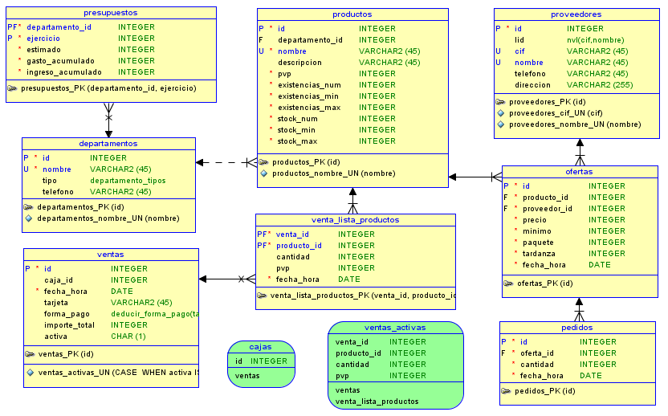
Modelo Físico, implementación en Oracle 11g
Por: Ignacio Baca Moreno-Torres
Decisiones generales - nomenclatura
Se ha establecido una nomenclatura general para las entidades del esquema
- Nombres de tablas en plural
- Nombres de atributos en singular
- Todas las entidades en minúsculas y separadas por
_
- Índices
nombretabla_nombreatributo_tipoindice
(único un, primario pk o índice idx)
- Disparadores terminados en
trg
- En bloques los argumentos comienzan por
a_,
los parámetros por p_ y los cursores por cur_
Decisiones generales - atributos
El modelo físico se ha implementado intentando que sea lo mas cómodo
para el cliente. Es decir, siempre que un campo no es critico o es deducible
se a optado por rellenarlo de forma que los insert sean rechazados por falta de
información en el menor numero de situaciones
Destacando la generación automática en
- Las claves únicas subrogadas de ofertas, pedidos y ventas se generan automáticamente
a través de secuencias
- Los campos fecha_hora relacionados con la fecha de creación, como en venta o pedidos
son incluidos automáticamente
- Atributos* numéricos inicializados a
0
Implementación del atributo compuesto tipo
Se ha definido un tipo departamento_tipos como tabla
CREATE OR REPLACE TYPE departamento_tipos
IS TABLE OF VARCHAR2 (45);
Y se ha añadido como campo atributo tipo
CREATE TABLE departamentos
(... , tipo departamento_tipos , ...)
NESTED TABLE tipo STORE AS departamentos_tipos ;
En NESTED TABLE se indica
donde almacenar la colección de tipos, es decir, se crea tabla
departamentos_tipos
Índices
No se ha generado ningún índice de adicional
Es decir, solo hay índices para claves primaría, únicas y foráneas.
Únicamente los índices descritos requieren 13 índices y
2 más generados automáticamente para la gestión del atributo especial
departamento_tipos,
lo que da como resultado un total de 15 índices
Se ha observado que podría ser interesante generar algún índice
sobre atributos fecha
muy usados en consultas, pero se ha considerado fuera del alcance del proyecto
Procedimientos y disparadores, engranajes del modelo físico
Por: Ignacio Baca Moreno-Torres
El problema de las ventas
Las ventas se pueden llevar a cabo a partir de
- Identificador de caja
- Identificador de ventas
Se han implementado dos formas de realizar una venta
- A través procedimientos
Basada en identificador de caja
- A través de vistas
Basada en el identificador de venta
Únicamente se ha implementado la parte de compra de productos
para ambas formas de identificación
Ventas a través del identificador de caja
Realizada usando los procedimientos
inicia_compra(caja_id)
compra_producto(caja_id,producto_id,cantidad)
finaliza_compra(caja_id)
Los tres procedimientos lo primero que hacen es obtener el id de venta, esto
implica también validar que hay venta y que está activa
Además durante el proceso de compra, se podrá calcular el importe
a través de la función
NUMBER total_compra(caja_id)
Ventas a través del id de caja - inicia compra
- Se ha optado por un método optimista para la compra de productos
- Esto implica que reiniciar la compra solo requiere borrar lista productos
IF flag = 0
THEN
INSERT INTO ventas (caja_id,activa) VALUES (a_caja_id,'s');
ELSE
DELETE FROM venta_lista_productos WHERE venta_id = (
SELECT ID FROM ventas
WHERE caja_id = a_caja_id AND activa IS NOT NULL );
UPDATE ventas SET fecha_hora = SYSDATE;
END IF;
Ventas a través del id de caja - compra producto
- Se acumulan las compras del mismo producto
- Si no estuviese el producto se incluye
- Se realizan otras validaciones como si existe el producto
o hay existencias para la cantidad pasada
-- Intentamos acumular la cantidad
UPDATE venta_lista_productos l
SET l.cantidad = nvl(l.cantidad,0) + p_cantidad, l.pvp = p_pvp
WHERE l.venta_id = p_venta_id AND l.producto_id = p_producto_id;
-- Si todavia no esta el producto en la lista se incluye
IF SQL%NOTFOUND THEN
INSERT INTO venta_lista_productos (venta_id, producto_id, cantidad, pvp)
VALUES (p_venta_id, p_producto_id, p_cantidad, p_pvp);
END IF;
Ventas a través del id de caja - finaliza compra
- Se valida que haya existencias suficientes
- Se calcula el importe total
- Se marca la venta como no activa
-- Se actualizan las existencias de productos
FOR l IN cur_lista_productos loop
BEGIN
UPDATE productos p
SET p.existencias_num = p.existencias_num - l.cantidad
WHERE p.ID = l.producto_id AND p.existencias_num >= l.cantidad;
p_importe_total := p_importe_total + (l.pvp * l.cantidad);
EXCEPTION WHEN NO_DATA_FOUND THEN
raise_application_error(-20000, 'no se ha encontrado producto o no hay existencias.');
END;
END loop;
Ventas a través del id de venta
Únicamente se ha implementado el proceso de comprar producto
- Se realiza a través de una vista
- La vista solo contiene datos de ventas activas
- Se usa un trigger
INSTEAD OF INSERT
- Si no esta el producto en la lista se incluye
- Si esta y el resultado es <> de 0 se actualiza
- Si el resultado es 0 se borra de la lista
Gestión del almacen
La gestión del almacén se realiza de forma similar tanto para existencias
como para stock
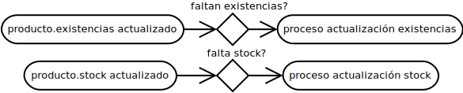
Pero se ha considerado que ligar el proceso del almacén al proceso de venta
no era adecuado
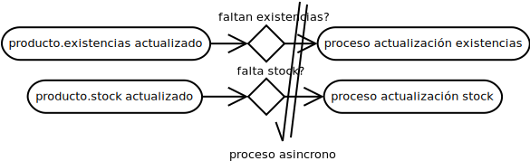
Gestión del almacen - proceso asíncrono
Para realizar este proceso asíncrono se ha usado el comando
dbms_job.submit que permite lanzar procesos
create or replace
TRIGGER "PRODUCTOS_EXISTENCIAS_TRG"
AFTER UPDATE OF existencias_num, existencias_min ON productos
FOR EACH ROW
WHEN (NEW.existencias_num < NEW.existencias_min) DECLARE
p_job NUMBER;
BEGIN
dbms_job.submit (p_job, 'BEGIN productos_update_existencias('||:NEW.ID||'); END;');
dbms_output.put_line('delegada actualizacion existencias al job '||p_job);
END;
Gestión del almacen - proceso de actualización
El proceso más interesantes es el de actualización de stock
-- calculo de mejor oferta
mejor_oferta(
a_producto_id => a_producto_id,
a_oferta_id => r_oferta_id,
a_oferta_cantidad => r_oferta_cantidad
);
-- realizacion del pedido
INSERT INTO pedidos (oferta_id,cantidad)
VALUES (r_oferta_id, r_oferta_cantidad);
-- se incluye en el almacen (supuestamente hay q esperar)
UPDATE productos SET stock_num = stock_num + r_oferta_cantidad;
-- se acutalizan existencias si fuese necesario
productos_update_existencias(
a_producto_id => a_producto_id
);
Gestión del almacen - calculo de la mejor oferta
El calculo de presupuestos
Se ha creado un procedimiento de utilidad para gestionar los presupuestos
- tiene un único parametro opcional
fecha
- si es
null se actualizan los presupuestos de todo el año
- si es un
date se acumula al presupuesto el día pasado
- los presupuestos son acumulados independientemente por ingresos y por gastos
- Actualizar presupuestos para cada venta o pedido es mala idea
- Se considera que es buena opción el calculo diario
- En caso de corrupción del acumulado se puede recalcular
Minería de datos, rizando el rizo
Por: Jesus S. Barriga Antonio
Consulta beneficios anuales
Consulta beneficios anuales - demostración
Consulta producto más vendido
Consulta producto más vendido - demostración
Consulta producto frecuencia
Consulta producto frecuencia - demostración
Consulta puntos de inflexión
Consulta puntos de inflexión - demostración
Conclusiones y dudas
Por: Jesus S. Barriga Antonio
Conclusiones I
- El modelo E/R y su posterior traducción al modelo
relacional, posibilita el desarrollo de sistemas más
robustos y adaptables, permitiendo la rápida
identificación de problemas en las propuestas iniciales
que en una implementación directa del modelo físico
conllevarían mayores retrasos y complejidades
- La búsqueda de la solución más sencilla posible,
tanto en el modelo como en su realización física, facilita
su comprensión y facilidad de adaptación a nuevos requerimientos
Conclusiones II
- El trabajo cooperativo de los miembros del equipo y el
debate sobre las distintas alternativas, posibilita un
modelado de la solución más rico y flexible
- Herramientas de desarrollo como SQL Developer
posibilitan la realización rápida del modelo físico
del sistema y la prueba del mismo.
Dudas
Gracias!